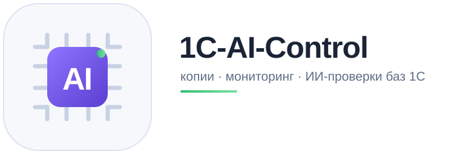
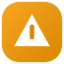
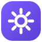

ai
1C-AI-Control — выбран знак D
Светлый стиль: белая плита, фиолетовый чип, зелёная искра. Ниже — логотипы, 24 иконки и 12 эмодзи.


Основной логотип: знак + «1C-AI-Control» + «копии · мониторинг · ИИ-проверки баз 1С»
Логотипы (SVG)
| Файл | Назначение |
|---|---|
light/mark-d-chip-light.svg | иконка приложения, favicon, аватар |
light/logo-horizontal-light.svg | сайт, письма, документы |
light/logo-stacked-light.svg | экран входа, обложка, визитка |
Иконки интерфейса — 24 шт (штриховые, currentColor)
backup
calendar
check
clock
cloud
cluster
dashboard
database
doc
lock
monitor
plug
refresh
report
search
sessions
settings
shield
sitemap
speed
terminal
users
warning
Иконки наследуют цвет текста (
stroke="currentColor"): в светлой теме — #1B2436,
в тёмной — #E7EDF7. Размер 24×24, толщина штриха 1.8.Эмодзи для разделов — 12 шт
ai

alert
backup
chart
cloud
db

gear
lock
ok
search
time
users
Цветные плашки 72×72 для заголовков разделов, писем и уведомлений в Mattermost:
база, ИИ, копия, внимание, готово, время, пользователи, график, защита, облако, настройки, поиск.
Палитра
| Роль | Цвет |
|---|---|
| Фиолетовый (основной) | #7C5CFF → #5B3FD1 |
| Зелёный (успех / ИИ-искра) | #2FBF71 → #7BE0A7 |
| Чернила (текст) | #1B2436 |
| Вторичный текст | #5F6D85 |
| Фон светлой темы | #F6F8FC |
| Границы | #DFE6F1 |